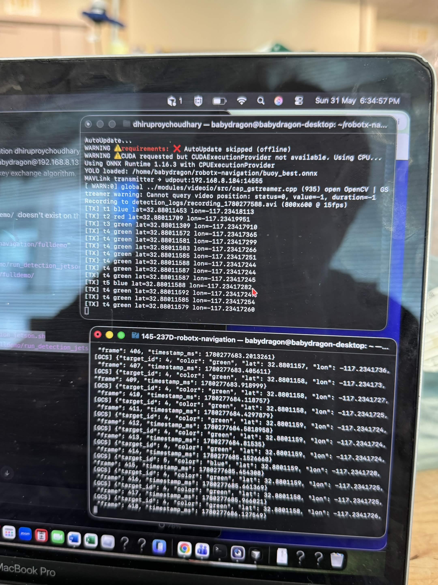
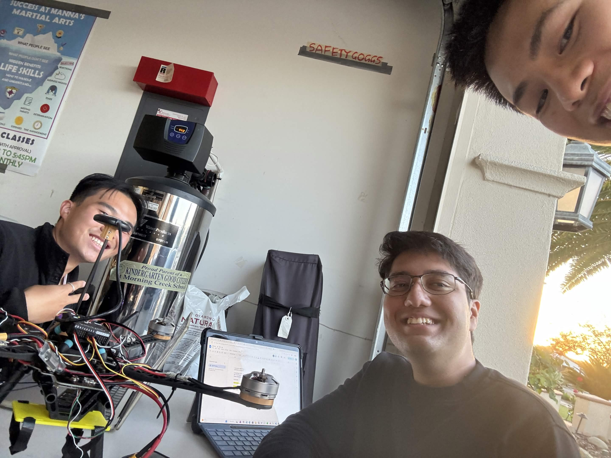

Wk 4 — System Setup Necessary
CSE 145 / CSE 237D · Spring 2026 · UC San Diego
Aerial Environment Recognition Communicated for Boat Navigation
An edge-compute color detection model, ray-projection coordinate mapping, and a low-latency publish-subscribe network — deployed on a UAV to extend the navigational intelligence of a surface vessel.
📷
H264 Camera
USB · 800×600
→
🔍
YOLO11n
ONNX · bbox
→
🎨
HSV Thresh
R / G / B
→
📐
Ray Projection
pixel → GPS
→
📡
MAVLink UDP
port 14555
→
💻
Ground Station
JSON · dot map
Project Overview
Extending a Vessel's Intelligence from the Air
To successfully deploy an aerial-to-surface recognition system that extends the navigational intelligence of a surface vessel, the drone must integrate an edge-compute color thresholding model for obstacle detection, mathematical ray-projection logic for coordinate mapping, and a low-latency publish-subscribe network for actionable payload transmission. This project delivers all three, running entirely on a Jetson Orin Nano aboard a UAV for Maritime RobotX 2026.
Two-Stage Detection
YOLO11n (ONNX) proposes bounding boxes. HSV thresholding classifies color within each ROI. More robust than end-to-end classification on limited training data.
GPS Mapping
Pixel centroids projected to GPS lat/lon using drone altitude, heading, and camera intrinsics. Flat-earth nadir model — valid for the competition environment.
MAVLink Comms
Detections transmitted as STATUSTEXT packets over UDP. Ground station decodes to JSON and logs a JSONL file for visualization and post-processing.
Live Visualization
Color-coded GPS dot map via matplotlib. Supports live polling mode while a session runs — real-time situational awareness from any networked laptop.
Project Status
Milestones
All necessary milestones complete. Final integrated flight demo in progress.
✅
✅
Wk 5 — MVP Demonstration Necessary
✅
Wk 6–7 — System Optimization Useful
✅
Wk 7–9 — Data-to-Action Pipeline Useful
🔄
Wk 9–10 — Integrated System Validation Useful
Demonstrations
Pipeline in Action
Both components validated independently. Drone flight confirms the aerial platform; the terminal output confirms end-to-end MAVLink transmission over WiFi with live buoy detections delivered to the ground station. Full in-flight integration is the Wk 9–10 milestone.
drone_flight.mp4 — UAV test flight

pipeline_screenshot.jpg — actual terminal output, field session
Live MAVLink Pipeline — Confirmed ✓
Jetson (192.168.8.x) → WiFi router → Laptop GCS
# Jetson TX — detections transmitted
[TX] t1 blue lat=32.8813 lon=-117.2341 fr=17
[TX] t2 green lat=32.8814 lon=-117.2339 fr=18
[TX] t3 red lat=32.8812 lon=-117.2343 fr=19
# Laptop GCS — decoded JSON
[GCS] {"id":1,"color":"blue","lat":32.8813,...}
[GCS] {"id":2,"color":"green","lat":32.8814,...}
[GCS] {"id":3,"color":"red","lat":32.8812,...}
[TX] t1 blue lat=32.8813 lon=-117.2341 fr=17
[TX] t2 green lat=32.8814 lon=-117.2339 fr=18
[TX] t3 red lat=32.8812 lon=-117.2343 fr=19
# Laptop GCS — decoded JSON
[GCS] {"id":1,"color":"blue","lat":32.8813,...}
[GCS] {"id":2,"color":"green","lat":32.8814,...}
[GCS] {"id":3,"color":"red","lat":32.8812,...}
YOLO11n — 94.1% precision, 97.1% mAP@50 on val set
MAVLink link — USB-C + WiFi router both validated
E2E flight demo — in progress (Wk 9–10)
The Team
Built by UCSD Engineers
Developed in collaboration with TritonAI and Team Inspiration for Maritime RobotX 2026.

Late-night hardware session — drone wiring, motor controllers, and good vibes 🛠️
SL
Stephen Liu
Perception & Communication Pipeline
UCSD CSE · xul052@ucsd.edu
DC
Dhruv Choudhary
Perception & Communication Pipeline
UCSD ECE · dchoudhary@ucsd.edu
JS
Prof. Jack Silberman
Project Advisor
UC San Diego
TI
Team Inspiration
Drone Hardware & Assembly
Colin Szeto · Chase Chen · Eesh Vij
Quick Start
Run the Pipeline
Requires: Jetson Orin Nano (already configured) + laptop on the same network.
# Terminal 1 — laptop: start ground station
cd ~/Downloads/SP26/CSE237D/145-237D-robotx-navigation
source .venv-mavlink/bin/activate
python mavlink_comms/scripts/run_ground_station.py --output-jsonl fulldemo/detections.jsonl
# Terminal 2 — SSH into Jetson: run detection
ssh babydragon@192.168.55.1
GCS_IP=192.168.55.100 bash fulldemo/run_detection_jetson.sh
# Terminal 3 — laptop: visualize live
python fulldemo/visualize_detections.py fulldemo/detections.jsonl --live
cd ~/Downloads/SP26/CSE237D/145-237D-robotx-navigation
source .venv-mavlink/bin/activate
python mavlink_comms/scripts/run_ground_station.py --output-jsonl fulldemo/detections.jsonl
# Terminal 2 — SSH into Jetson: run detection
ssh babydragon@192.168.55.1
GCS_IP=192.168.55.100 bash fulldemo/run_detection_jetson.sh
# Terminal 3 — laptop: visualize live
python fulldemo/visualize_detections.py fulldemo/detections.jsonl --live
Fresh Jetson setup: Wiki → Setup & Replication ↗
camera_live_feed.py ← Main pipeline: YOLO → HSV → GPS projection → MAVLink TX
color_utils.py ← HSV color range definitions and fallback ranges (R/G/B)
mavlink_comms/
├─ transmitter.py ← BuoyMavlinkTransmitter — wraps pymavlink UDP send
└─ scripts/run_ground_station.py ← Laptop GCS: listens UDP 14555, logs JSON detections
fulldemo/
├─ PARTNER_INSTRUCTIONS.md ← Step-by-step run guide for team members
├─ README.md ← Full demo guide with post-processing steps
└─ visualize_detections.py ← GPS dot map visualizer, supports --live polling
buoy_best.onnx ← Trained YOLO11n model (opset 19), 94.1% precision on val set
captures/classes/ ← Reference images (red/green/blue) for HSV range derivation
vendor/mavcore/ ← Vendored pymavlink core, patched for Python 3.8
Wire format:
RXB|id|color|lat_e7|lon_e7|frame
· Output: JSONL · On-device: CSV + AVI
Resources
Links
GitHub Repository
Full source code, models, and detection scripts
Project Wiki
Setup, architecture, team, milestones
Run Instructions
Step-by-step guide for running the demo pipeline
Codebase Structure
Annotated repo layout and data format specs
Maritime RobotX 2026
The international competition this project supports